Hardening overview
Six review findings and evidence boundaries.
Zoomable SVG · Individual PNG · Editable source
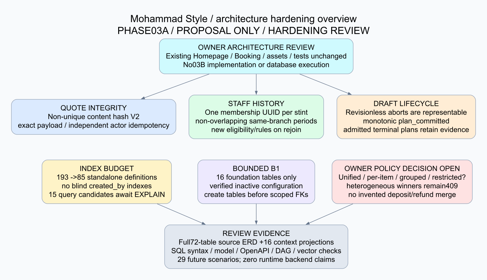
Actual diagram render from editable source; not a backend screenshot or runtime-test claim.Backend module map
Readable grouped map; exact import dependencies are a separate DAG.
Zoomable SVG · Individual PNG · Editable source
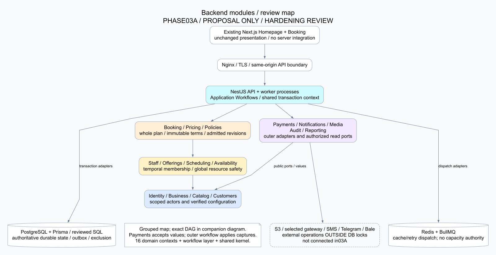
Actual diagram render from editable source; not a backend screenshot or runtime-test claim.Payment/refund sequence
Straight message arrows, mutually exclusive live-hold/compensation paths and a separate later cancellation flow.
Zoomable SVG · Individual PNG · Editable source
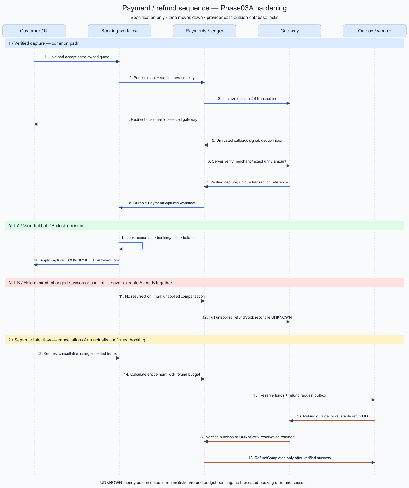
Actual diagram render from editable source; not a backend screenshot or runtime-test claim.Complete72-table ERD
Preserved full source and vector detail. PNG is a thumbnail; start with bounded-context views below.
Zoomable SVG · Individual PNG · Editable source
Actual diagram render from editable source; not a backend screenshot or runtime-test claim.Authoritative booking flow
Existing whole-plan admission, consent, hold, expiry and atomic confirmation.
Zoomable SVG · Individual PNG · Editable source
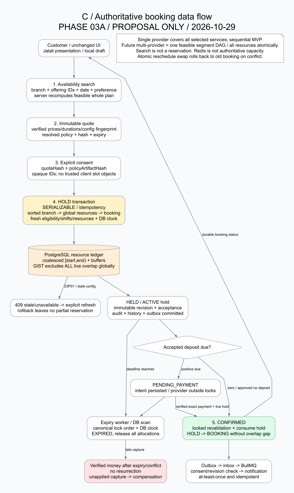
Actual diagram render from editable source; not a backend screenshot or runtime-test claim.Policy resolution
Mixed winning policies fail closed; aggregation business choice remains pending.
Zoomable SVG · Individual PNG · Editable source
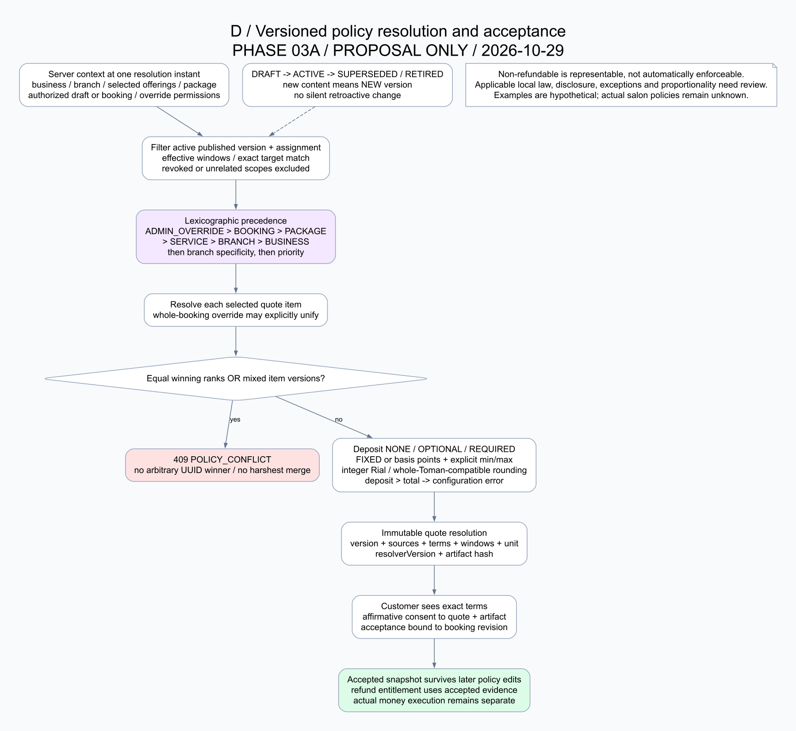
Actual diagram render from editable source; not a backend screenshot or runtime-test claim.Multi-branch model
Membership, qualification, offering, schedule and resource occupancy remain distinct.
Zoomable SVG · Individual PNG · Editable source
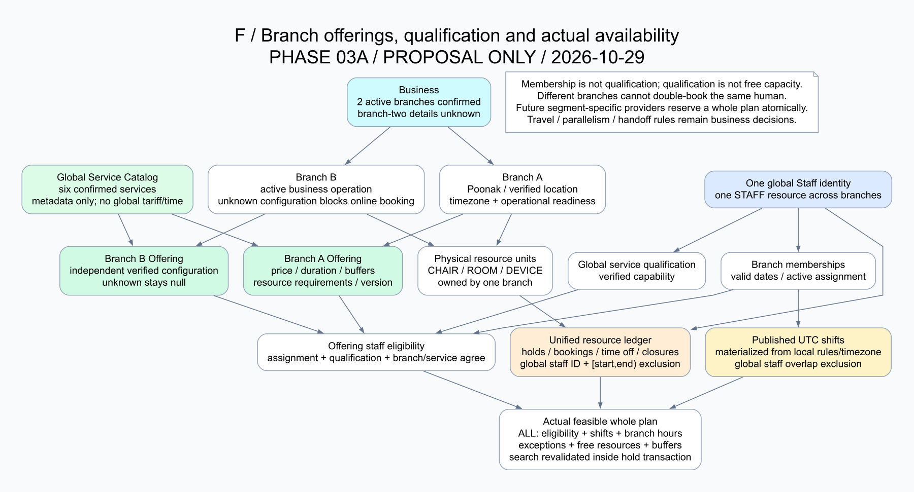
Actual diagram render from editable source; not a backend screenshot or runtime-test claim.Exact dependency DAG
All18 dependency nodes; no cycles.
Zoomable SVG · Individual PNG · Editable source
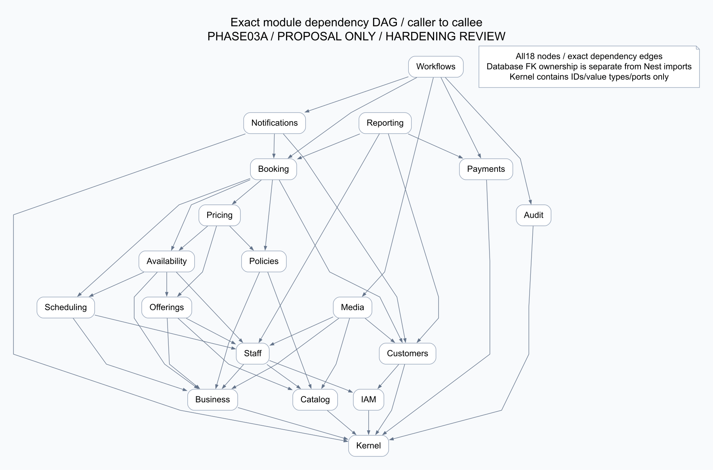
Actual diagram render from editable source; not a backend screenshot or runtime-test claim.Booking lifecycle
Draft aborts are valid with unplanned shape; admitted terminal states retain revisions.
Zoomable SVG · Individual PNG · Editable source
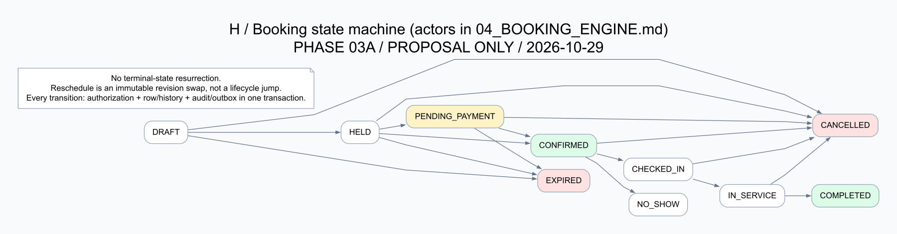
Actual diagram render from editable source; not a backend screenshot or runtime-test claim.Concurrency specification
Two searches may see free capacity; only a complete held plan commits. No working-backend race was executed.
Zoomable SVG · Individual PNG · Editable source
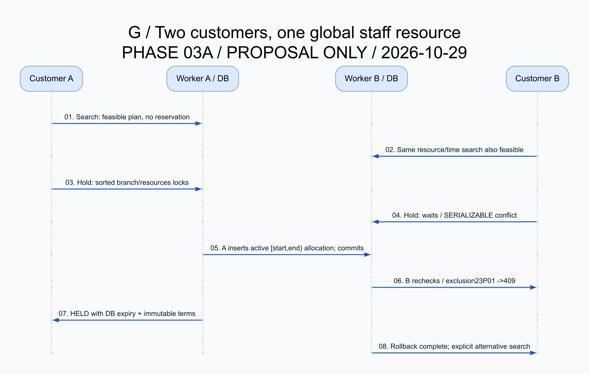
Actual diagram render from editable source; not a backend screenshot or runtime-test claim.Business context ERD
2 owned tables: business, branch. Dashed nodes are external references; all72 owned tables covered exactly once.
Zoomable SVG · Individual PNG · Editable source
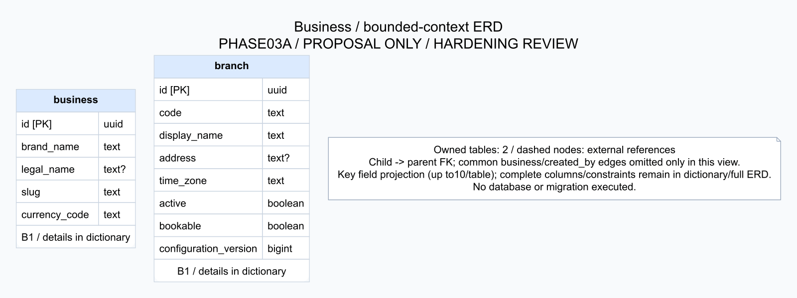
Actual diagram render from editable source; not a backend screenshot or runtime-test claim.IAM context ERD
7 owned tables: app_user, auth_identity, auth_session, permission, role, role_permission, user_role_assignment. Dashed nodes are external references; all72 owned tables covered exactly once.
Zoomable SVG · Individual PNG · Editable source
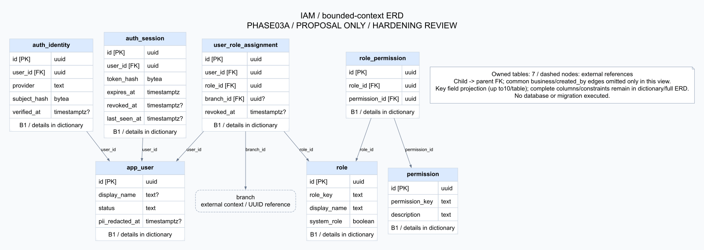
Actual diagram render from editable source; not a backend screenshot or runtime-test claim.Scheduling context ERD
7 owned tables: branch_working_hours, branch_closure, resource, staff_schedule_rule, staff_shift, staff_time_off, resource_allocation. Dashed nodes are external references; all72 owned tables covered exactly once.
Zoomable SVG · Individual PNG · Editable source
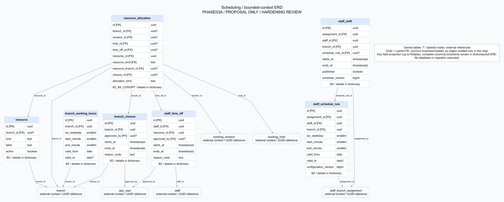
Actual diagram render from editable source; not a backend screenshot or runtime-test claim.Catalog context ERD
3 owned tables: service, package, package_service. Dashed nodes are external references; all72 owned tables covered exactly once.
Zoomable SVG · Individual PNG · Editable source
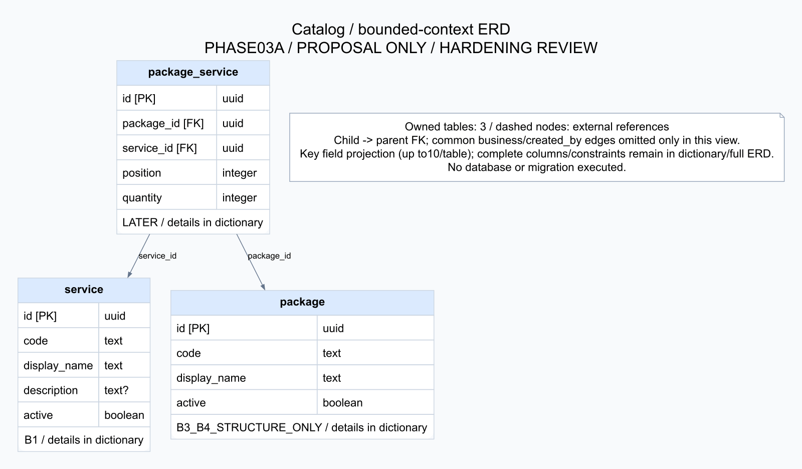
Actual diagram render from editable source; not a backend screenshot or runtime-test claim.Offerings context ERD
3 owned tables: branch_service_offering, offering_staff_eligibility, offering_resource_requirement. Dashed nodes are external references; all72 owned tables covered exactly once.
Zoomable SVG · Individual PNG · Editable source
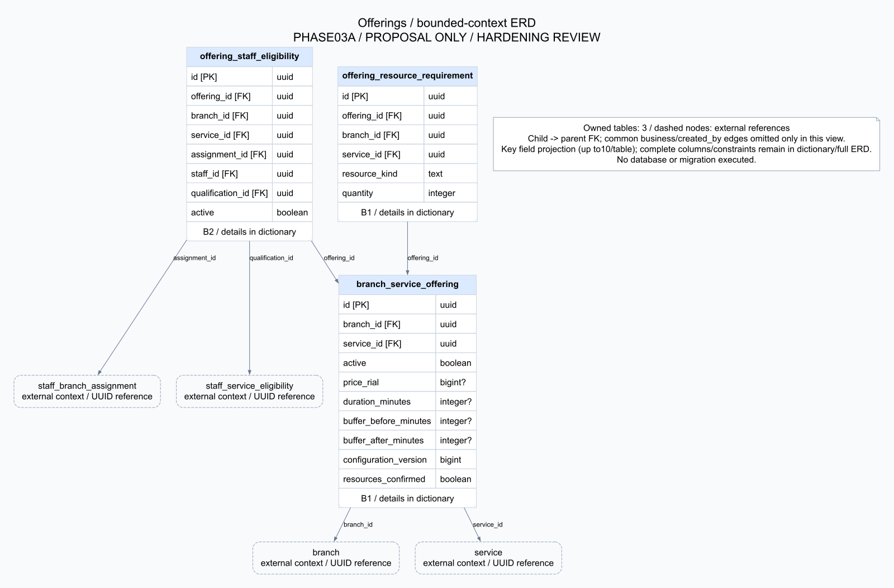
Actual diagram render from editable source; not a backend screenshot or runtime-test claim.Staff context ERD
3 owned tables: staff, staff_branch_assignment, staff_service_eligibility. Dashed nodes are external references; all72 owned tables covered exactly once.
Zoomable SVG · Individual PNG · Editable source
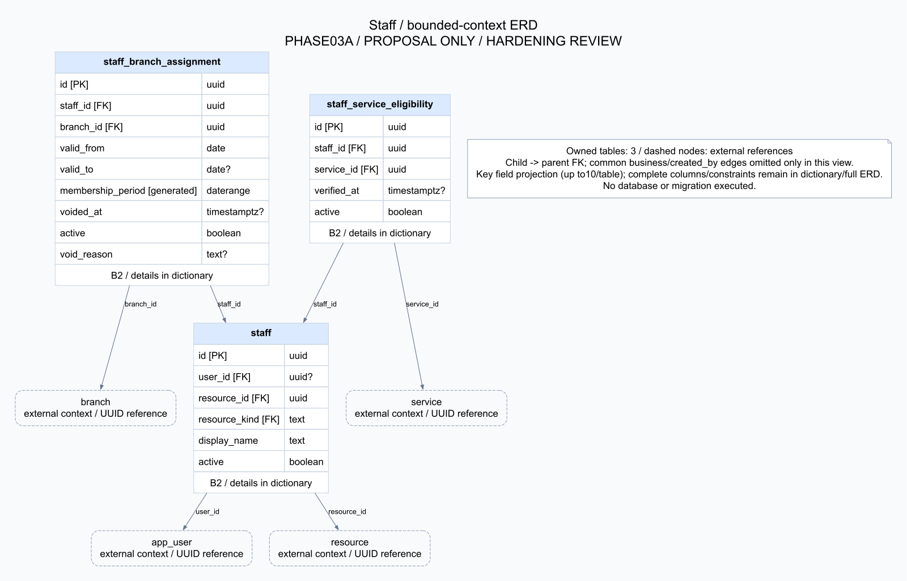
Actual diagram render from editable source; not a backend screenshot or runtime-test claim.Customers context ERD
1 owned tables: customer. Dashed nodes are external references; all72 owned tables covered exactly once.
Zoomable SVG · Individual PNG · Editable source
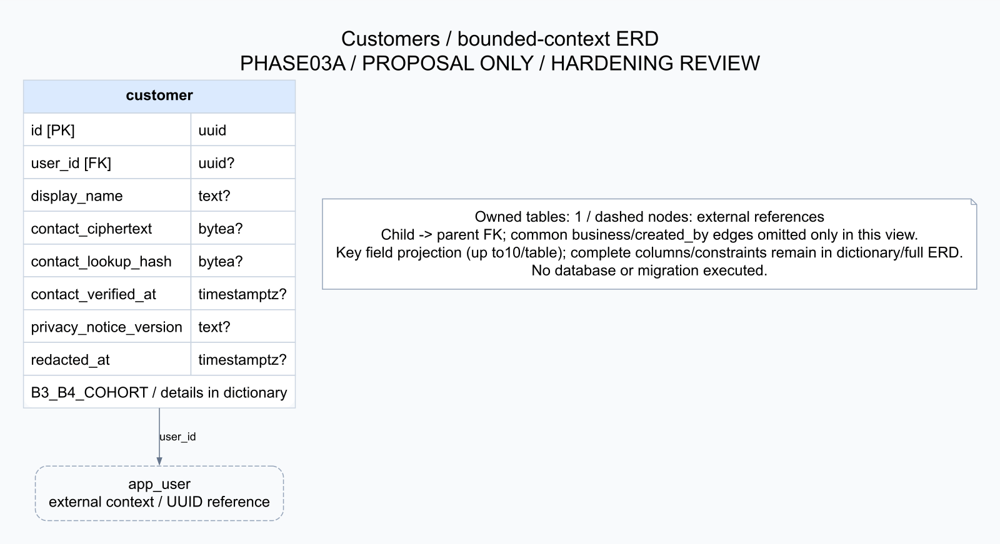
Actual diagram render from editable source; not a backend screenshot or runtime-test claim.Availability context ERD
1 owned tables: availability_configuration. Dashed nodes are external references; all72 owned tables covered exactly once.
Zoomable SVG · Individual PNG · Editable source
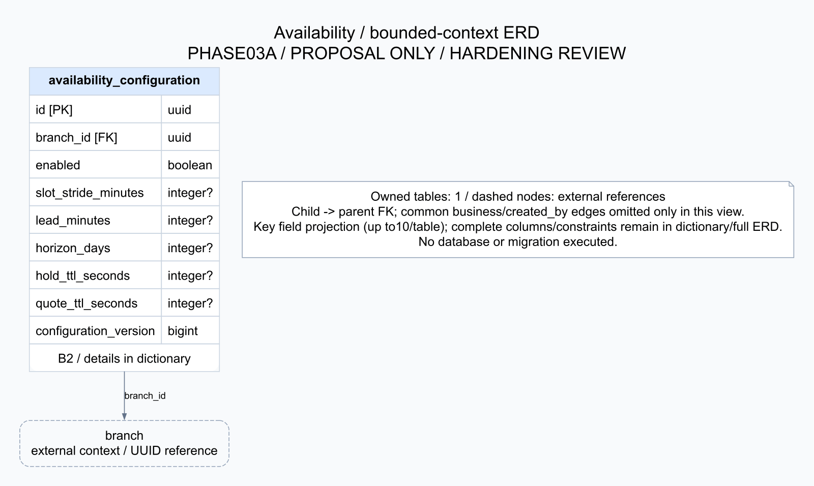
Actual diagram render from editable source; not a backend screenshot or runtime-test claim.Policies context ERD
7 owned tables: booking_policy, booking_policy_version, policy_refund_window, booking_policy_assignment, quote_policy_resolution, quote_policy_source, booking_policy_acceptance. Dashed nodes are external references; all72 owned tables covered exactly once.
Zoomable SVG · Individual PNG · Editable source
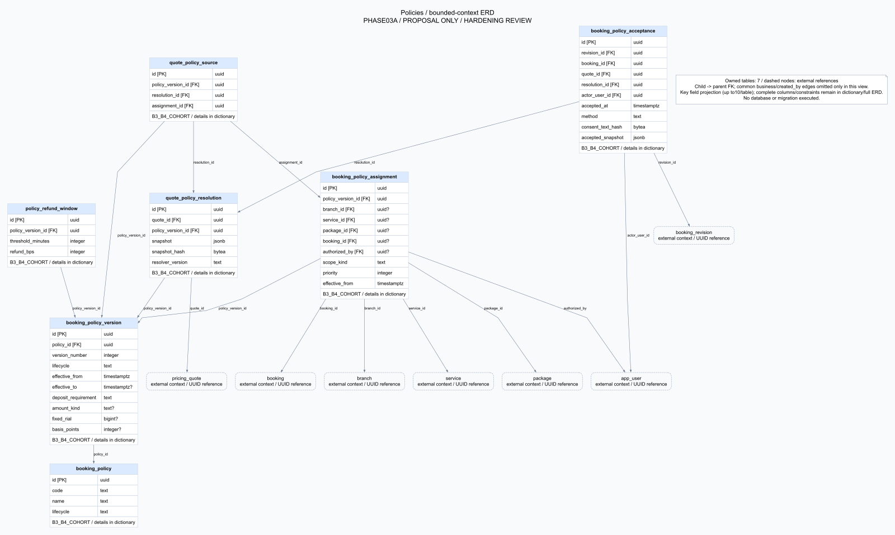
Actual diagram render from editable source; not a backend screenshot or runtime-test claim.Pricing context ERD
2 owned tables: pricing_quote, pricing_quote_item. Dashed nodes are external references; all72 owned tables covered exactly once.
Zoomable SVG · Individual PNG · Editable source
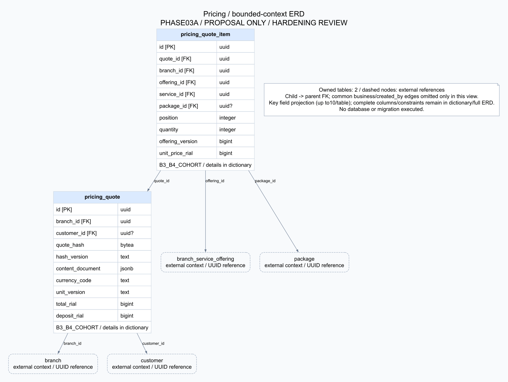
Actual diagram render from editable source; not a backend screenshot or runtime-test claim.Booking context ERD
8 owned tables: booking, booking_revision, booking_item, booking_service_segment, segment_dependency, booking_hold, booking_status_history, segment_resource_assignment. Dashed nodes are external references; all72 owned tables covered exactly once.
Zoomable SVG · Individual PNG · Editable source
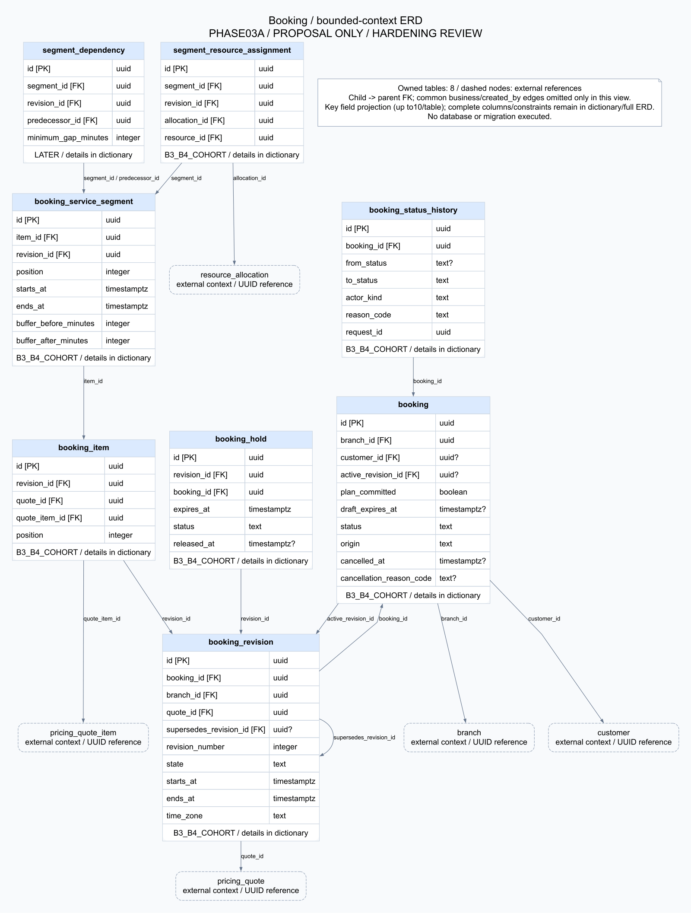
Actual diagram render from editable source; not a backend screenshot or runtime-test claim.Payments context ERD
7 owned tables: payment_intent, gateway_event, payment_transaction, payment_application, payment_balance, refund, financial_audit_record. Dashed nodes are external references; all72 owned tables covered exactly once.
Zoomable SVG · Individual PNG · Editable source
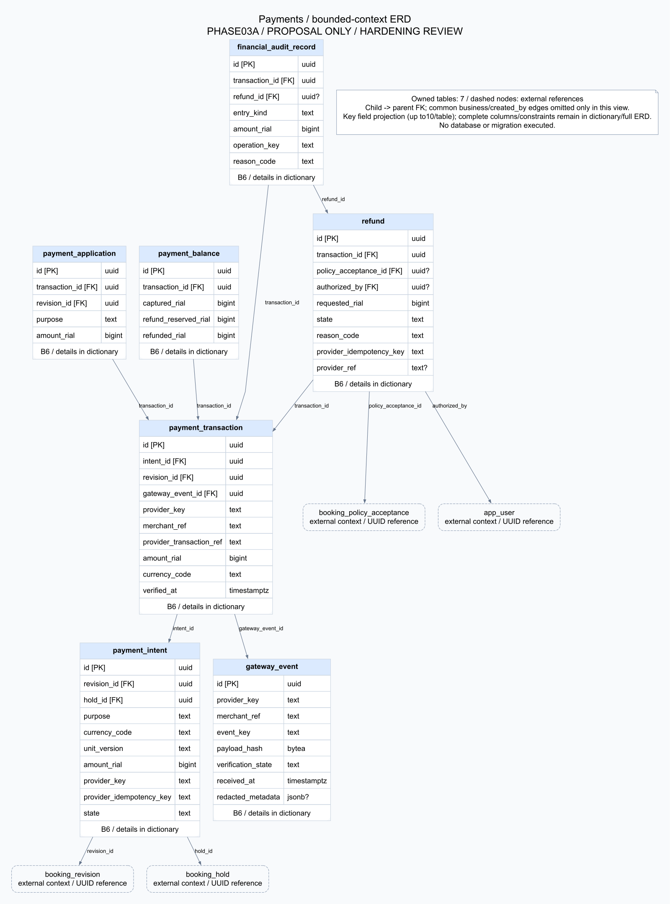
Actual diagram render from editable source; not a backend screenshot or runtime-test claim.Infrastructure context ERD
3 owned tables: idempotency_record, outbox_event, consumer_inbox. Dashed nodes are external references; all72 owned tables covered exactly once.
Zoomable SVG · Individual PNG · Editable source
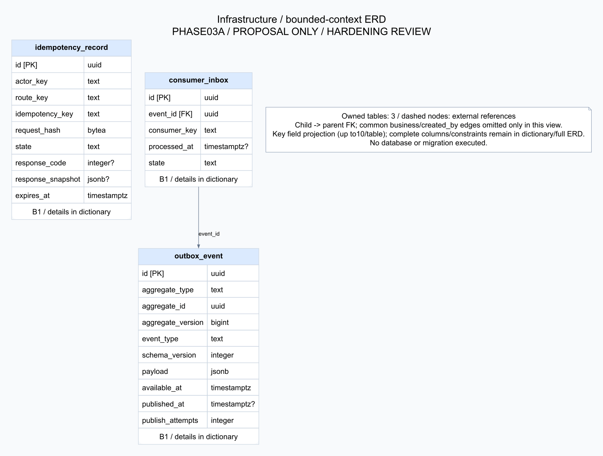
Actual diagram render from editable source; not a backend screenshot or runtime-test claim.Media context ERD
10 owned tables: media_asset, media_variant, media_publication_consent, portfolio_category, portfolio_item, portfolio_item_category, portfolio_service_relation, portfolio_media, portfolio_tag, portfolio_item_tag. Dashed nodes are external references; all72 owned tables covered exactly once.
Zoomable SVG · Individual PNG · Editable source
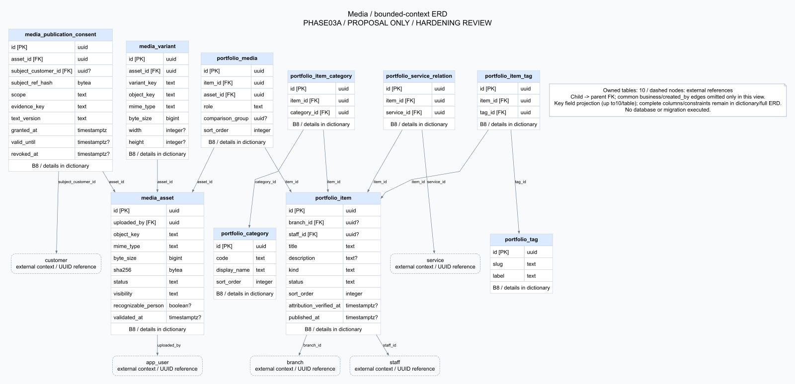
Actual diagram render from editable source; not a backend screenshot or runtime-test claim.Notifications context ERD
7 owned tables: notification_channel_config, notification_template, notification_preference, notification_link_challenge, channel_identity, notification_event, notification_delivery_attempt. Dashed nodes are external references; all72 owned tables covered exactly once.
Zoomable SVG · Individual PNG · Editable source
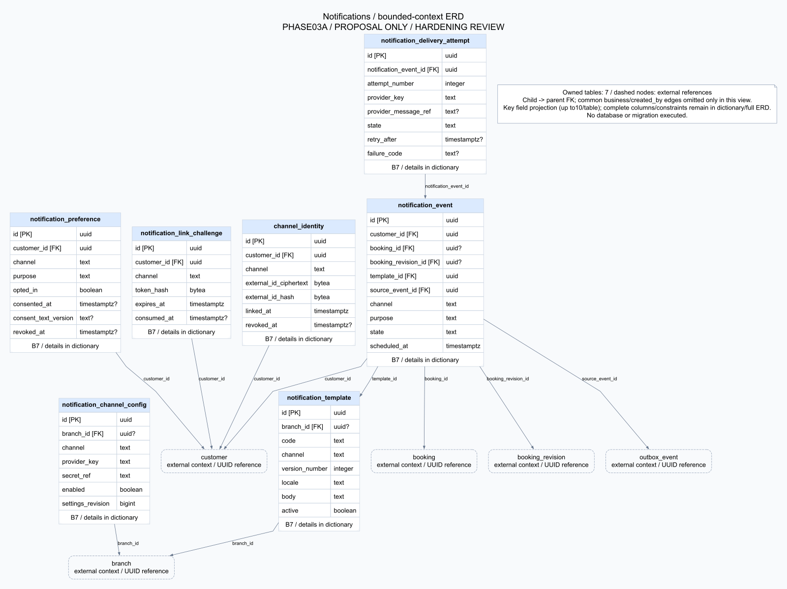
Actual diagram render from editable source; not a backend screenshot or runtime-test claim.Audit context ERD
1 owned tables: audit_log. Dashed nodes are external references; all72 owned tables covered exactly once.
Zoomable SVG · Individual PNG · Editable source
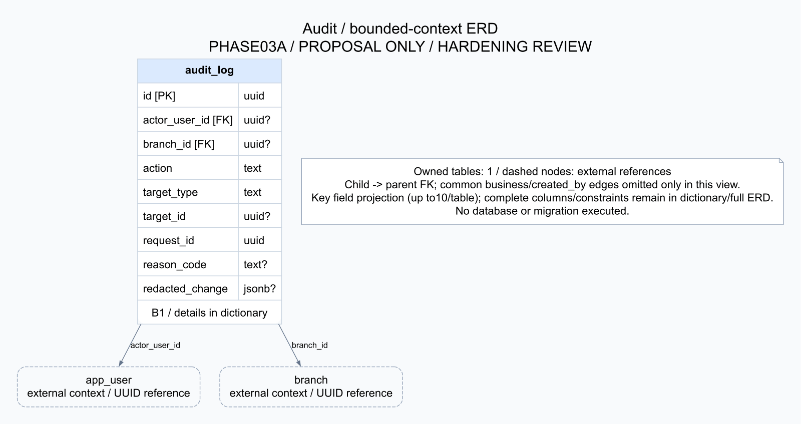
Actual diagram render from editable source; not a backend screenshot or runtime-test claim.